Robo Dojo is a game where you program bots to battle each other with home-brewed viruses (screenshot). Robo Dojo clones the 1998 game RoboCom.
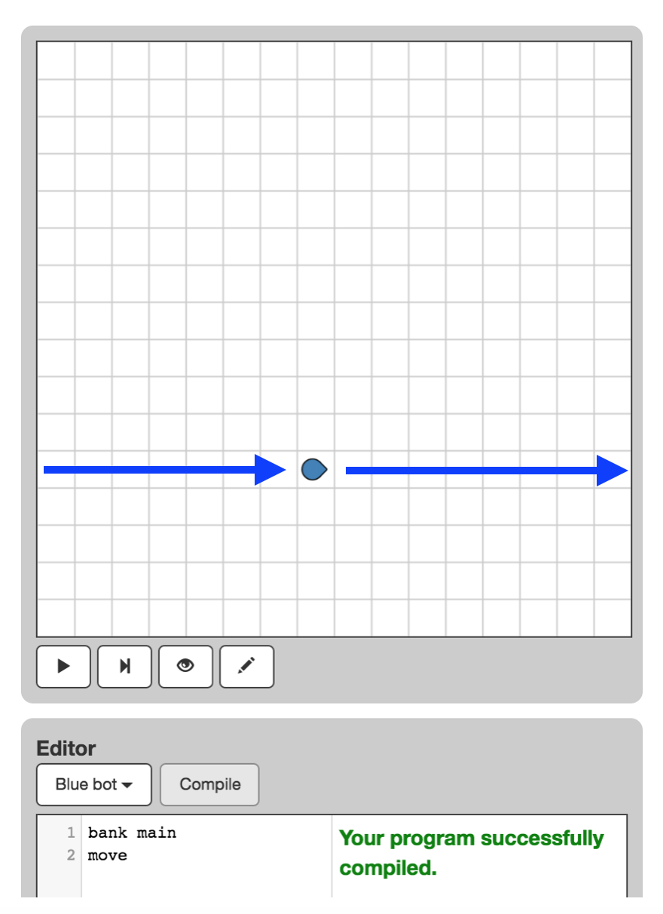
When you click Compile, the board clears itself then uploads your program to a fresh bot, then randomly places the bot on the board.
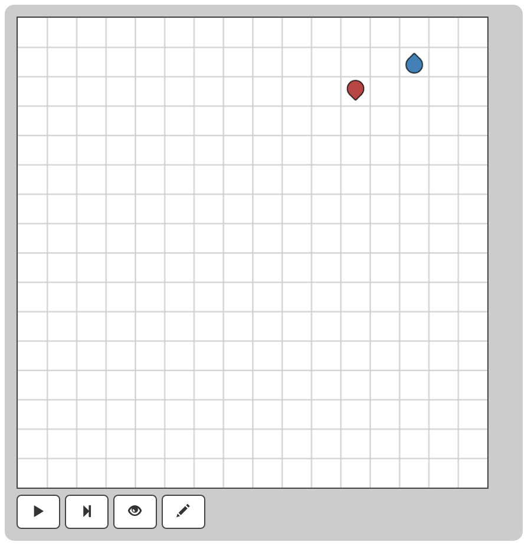
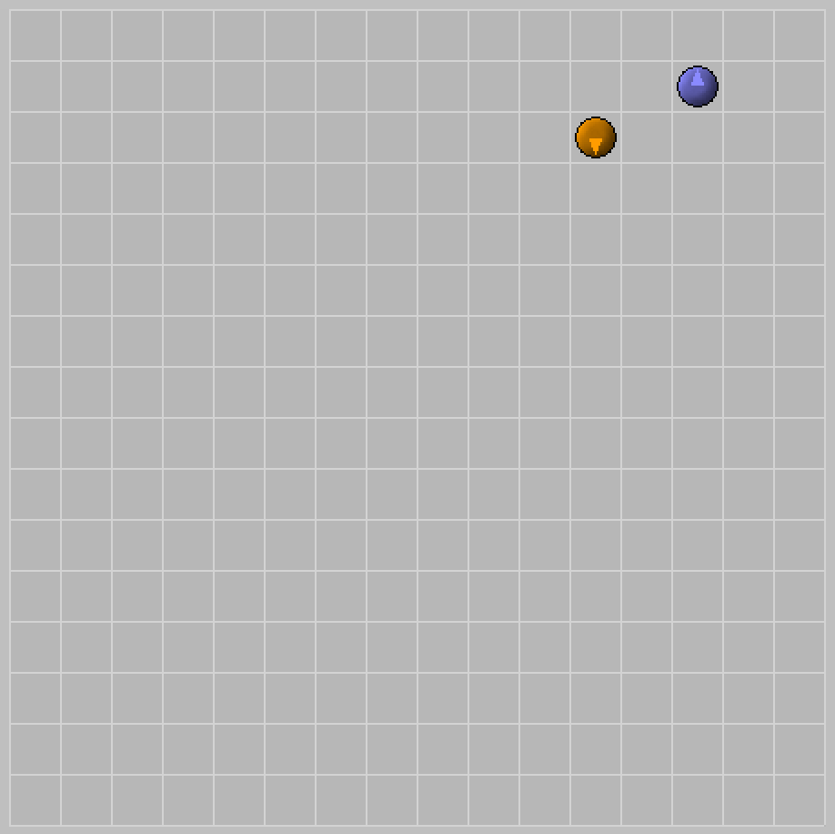
Activator3 (orange/red) and Alien 1.4 (blue)
There are three instruction sets: Basic (0), Advanced (1), and Super (2).
Different instructions belong to different instruction sets. For example.
Each bot is either Basic, Advanced, or Super — which effects which instructions each bot may execute.
The first parameter of the create instruction specifies the instruction set
for the child bot.
In our Replication program, we use the parameter 2 to specify that the child
should have the Super instruction set, since we want the child to be able to
create a child of its own.
TODO: Link to instruction set documentation
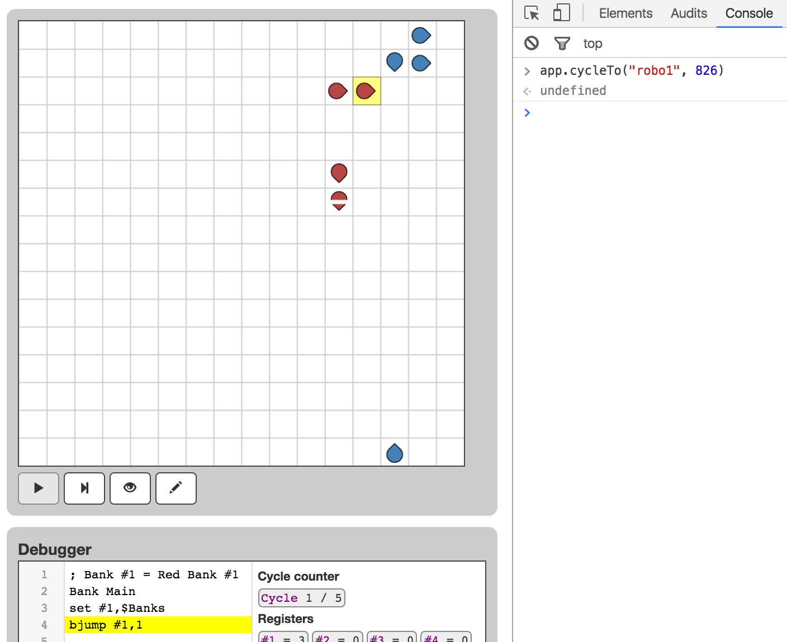
TODO
The trans instruction uploads one bank from one bot to another.
There are two parameters:
During the trans instruction’s last cycle, if the forward cell is occupied,
then the bot copies its Source bank into the forward bot’s Destination bank,
overwriting any bank that might already be there.
Thus trans 1,1 copies the main bank from parent to child.
RoboCom is no longer actively maintained but its website is archived here. Here’s a screenshot.
Robo Dojo only implements the “Original” instruction set from RoboCom.
Robo Dojo uses the “Classic” timing model from RoboCom.
I have strove to make the Robo Dojo simulation semantics identical to RoboCom — however I could not create a cycle-for-cycle duplicate of RoboCom.
Nevertheless, Robo Dojo and RoboCom are similar enough to produce similar outputs for similar inputs.
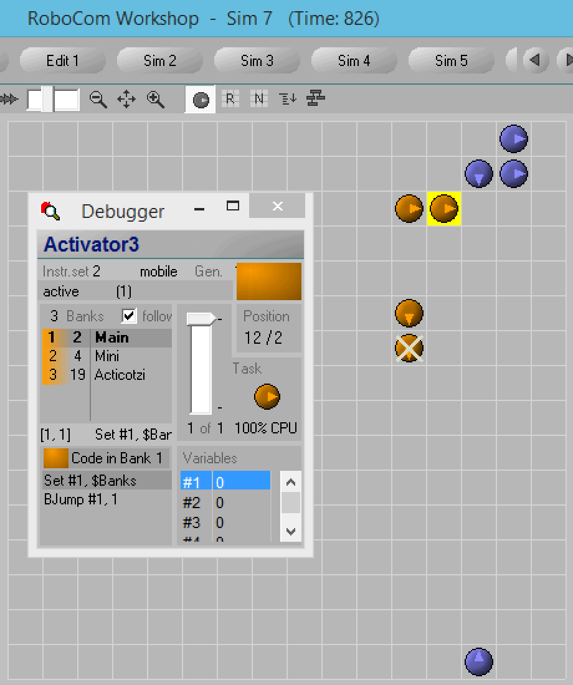
TODO: Rename header
Running of of version 93d5a2177f910cf17aa3885102b5687a962531b6
TODO: Explain X-Y-Z system
Round 1
Match Robo Dojo RoboCom
--------------------------------------------------------
Activator3 vs. Alien3.4 0-2-5 0-1-7 *
Alpha vs. Fruchtzwerk 2 2-0-5 1-0-6
Conciler vs. Kommari 2.1 6-0-1 6-0-1
Delusion 3.7 vs. Einfachst-DM.DV 7-0-0 7-0-0
DoomMob 1.6 vs. Flooder 1.0 0-7-0 0-7-0
Geza's McRobi vs. Goody2 0-7-0 0-7-0
Martins Echter vs. Goodymorph 0-0-7 0-0-7
HotBot V2 vs. inter#active 6-0-1 5-0-2
LastHopeC vs. <Jo's little> 6-0-1 8-0-1 *
Liquid Ice 1.2 vs. Lauf und Mine 0-7-1 0-4-3 *
Mikrovirus vs. The Masterkiller 1 0-6-1 0-5-2
Das Geschwür vs. TheMob.NextG2 0-0-7 0-0-7
The Overkiller vs. Nullen2 4-1-2 14-0-0 * +
Rainman vs. RecruteIT 6-1-0 5-2-0
Simple vs. Seuche3 0-0-7 0-0-7
Styx vs. Sweeper 0-0-7 0-0-7
Tie Fighter vs. Test 3-1 0-7-0 0-7-0
UltimaDefender vs. Tom Himself 0-0-7 0-0-7
Zwei Arten vs. Zellwucher4 7-0-0 7-0-0
Round 2
Match Robo Dojo RoboCom
----------------------------------------------------------
Alien3.4 vs. Alpha 7-0-1 6-0-1 *
Conciler vs. Delusion 3.7 0-7-0 0-7-0
Flooder 1.0 vs. Goody2 1-2-4 1-0-13 * +
Goodymorph vs. HotBot V2 0-0-0 0-0-0
LastHopeC vs. Lauf und Mine 0-0-0 0-0-0
The Masterkiller 1 vs. TheMob.NextG2 0-0-0 0-0-0
The Overkiller vs. Rainman 0-0-0 0-0-0
Seuche3 vs. Sweeper 0-0-0 0-0-0
Test 3-1 vs. Tom Himself 0-0-0 0-0-0
Zwei Arten (bye) ..... .....
Round 3
Match Robo Dojo RoboCom
----------------------------------------------------------
Alien3.4 vs. Delusion 3.7 0-0-0 0-0-0
The problem is at least twofold:
Here is one example of mysterious RoboCom semantics.
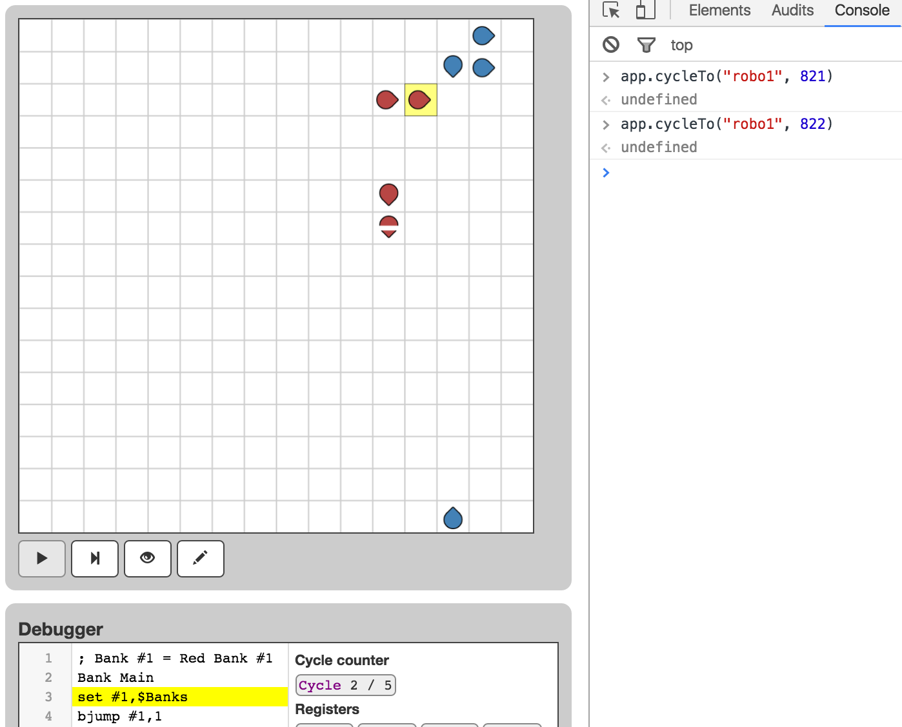
The move instruction tells the bot to move forward one cell.
It takes 18 cycles to execute; on the 18th cycle the bot attempts to move forward.
If the forward cell is occupied on the 18th cycle, then the move instruction
does nothing.
Robo Dojo is a game where you program bots to battle each other with home-brewed viruses (screenshot). Robo Dojo clones the 1998 game RoboCom.
s 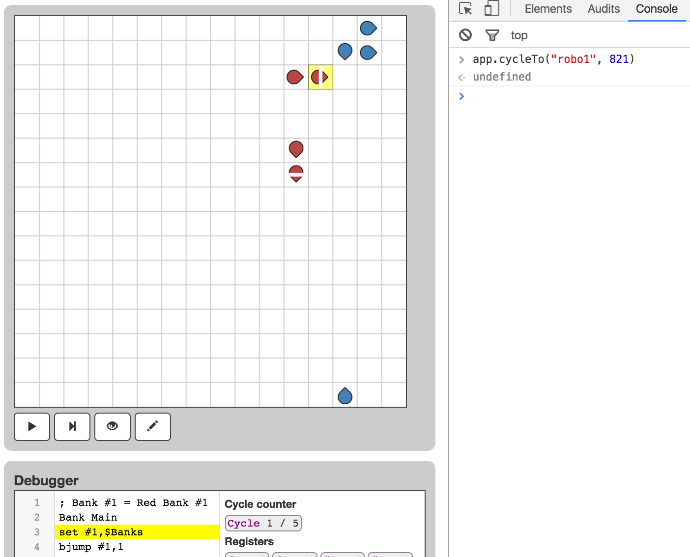
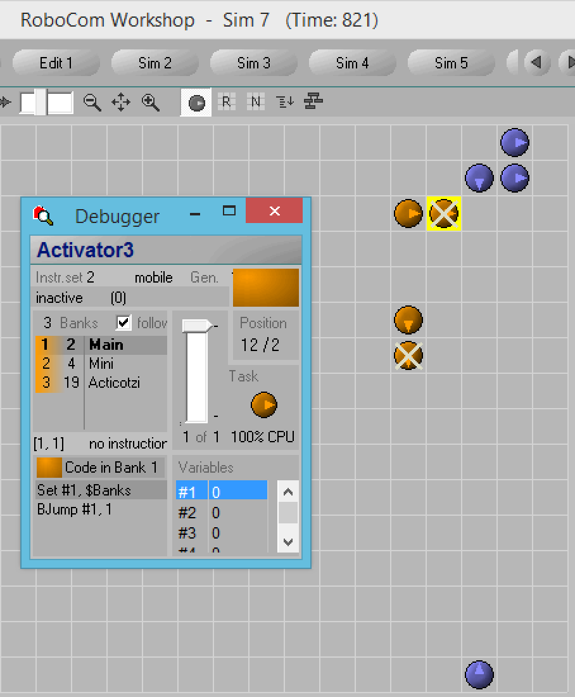
Every program is segmented into banks; every instruction belongs to exactly one bank.
For our hello-world program, our program has only one bank, which we have named the main bank.
When the simulation launches, each bot begins executing at the first instruction of the first bank of the program.
I loaded up two robots from the July Package, and placed them in the same starting position in both Robo Dojo and RoboCom.
Then, the simulations diverged between Robo Dojo and RoboCom.
TODO: explain how I know my semantics are correct
I investigated several changes to Robo Dojo to see if I could get the simulations to converge, but none of the changes worked.
Each bot is either mobile or immobile (i.e. whether or not it can execute the
move instruction).
The third parameter to the create instruction specifies whether or not the
child should be mobile:
Each bot contains one or more banks.
The second parameter to the create instruction specifies how many banks
the child should have.
These will all be empty banks, which is to say every bank will have zero instructions.
The following program causes your bot to move across the board:
bank main
move
move instruction belongs to the Basic instruction setcreate instruction belongs to the Super instruction set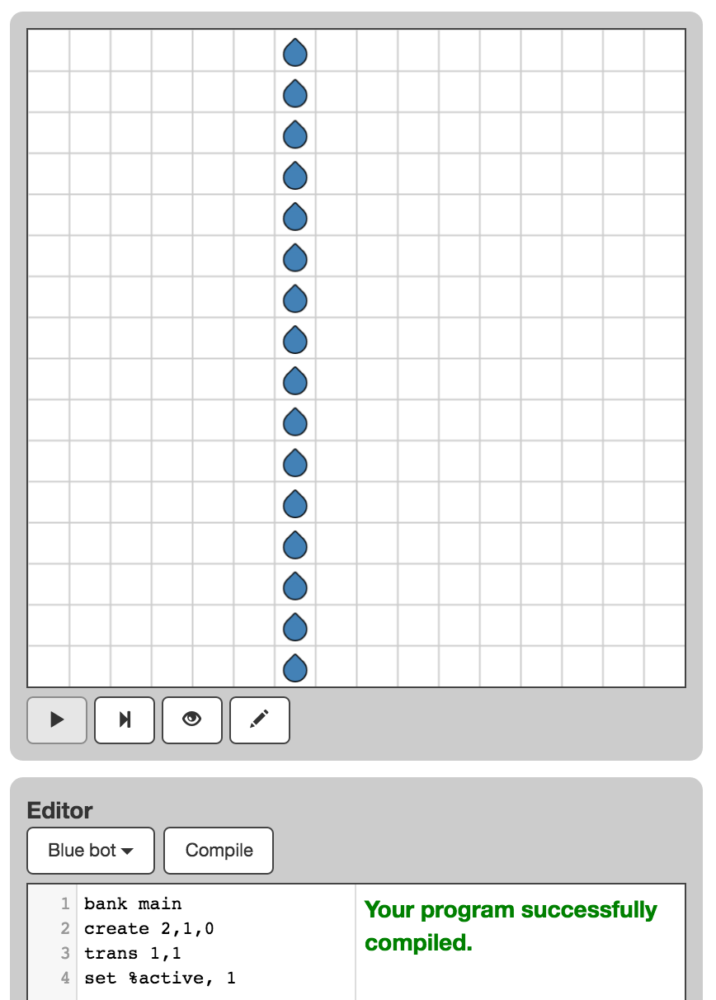
The board is the 16 x 16 toroidal universe where bots play.
Each cell can hold only one bot at a time.
The board executes one step at a time.
During each board step, the board executes one cycle for each bot, in order from oldest bot to newest bot.
Whenever a bot reaches the end of its bank, the bot Auto Reboots — which means the bot’s execution starts over at the first instruction of the first bank.
In our Hello World program, Auto Reboot causes the bot to repeatedly execute the move instruction.
The following program causes your bot to clone itself, then its child clones itself, and so on:
bank main
create 2,1,0
trans 1,1
set %active, 1
There are four editors, one for each color: blue, red, green, and yellow.
The blue editor edits the blue bot’s program, etc.
To select your editor, click the “Blue bot” drop down menu.
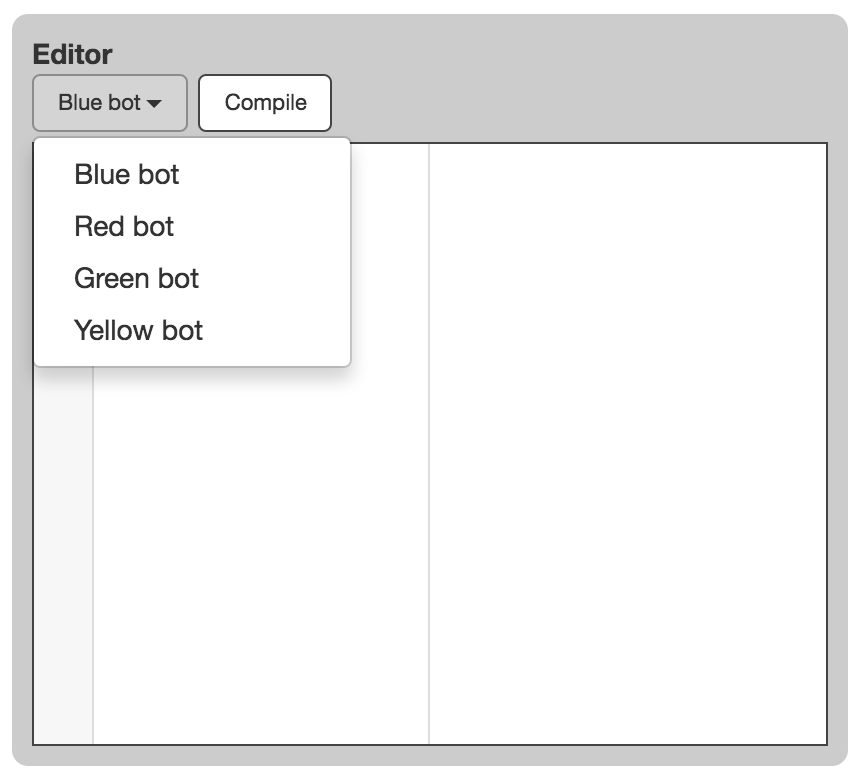
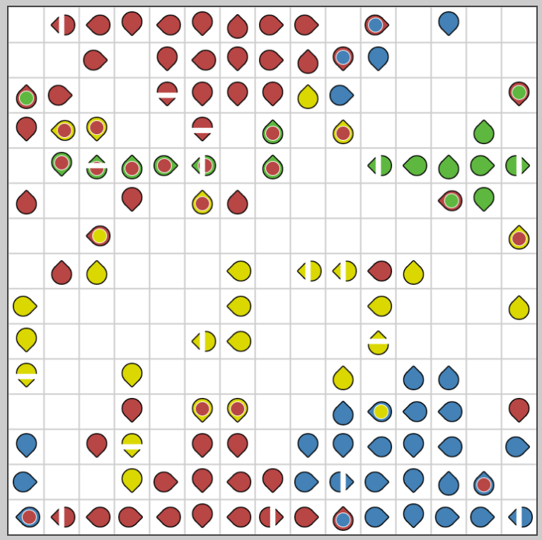
To execute an instruction, the bot must execute one or more cycles for the instruction.
For example, the move instruction requires 18 cycles.
During the 18th cycle, the move instruction will actually execute.
Before the 18th cycle, the move instruction does nothing.
See also
We this because:
We this because:
In one board cycle, the selected bot becomes activated and executes one
cycle of the set instruction.
You might think that a bot shouldn’t be able to become activated and execute a bot-cycle in the same board-cycle, however these semantics are intentional.
I have investigated preventing bots from executing a cycle immediately after their activation, however this change did not effect convergence.
The create instruction builds a new bot in front of the builder.
There are three parameters:
The create instruction is the slowest instruction.
During the create instruction’s last cycle, if the forward cell is empty, then
the child will be created in front of the parent. The child bot will have empty
banks and will be “inactive” (which is why
we need to execute the trans and set instructions after create).
Thus, create 2,1,0 creates an immobile bot with the Super instruction set and
one empty bank.
The set instruction assigns a value to a variable.
There are two parameters:
Thus, set %active, 1 assigns the value 1 to the variable %active.
%active is a special variable: setting it to 1 (or greater)
causes the forward bot to become activated.
TODO: Link to article on variables and constants
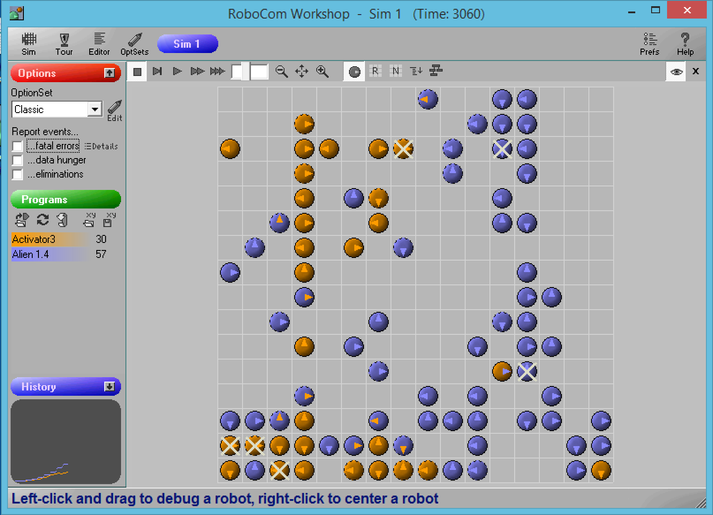
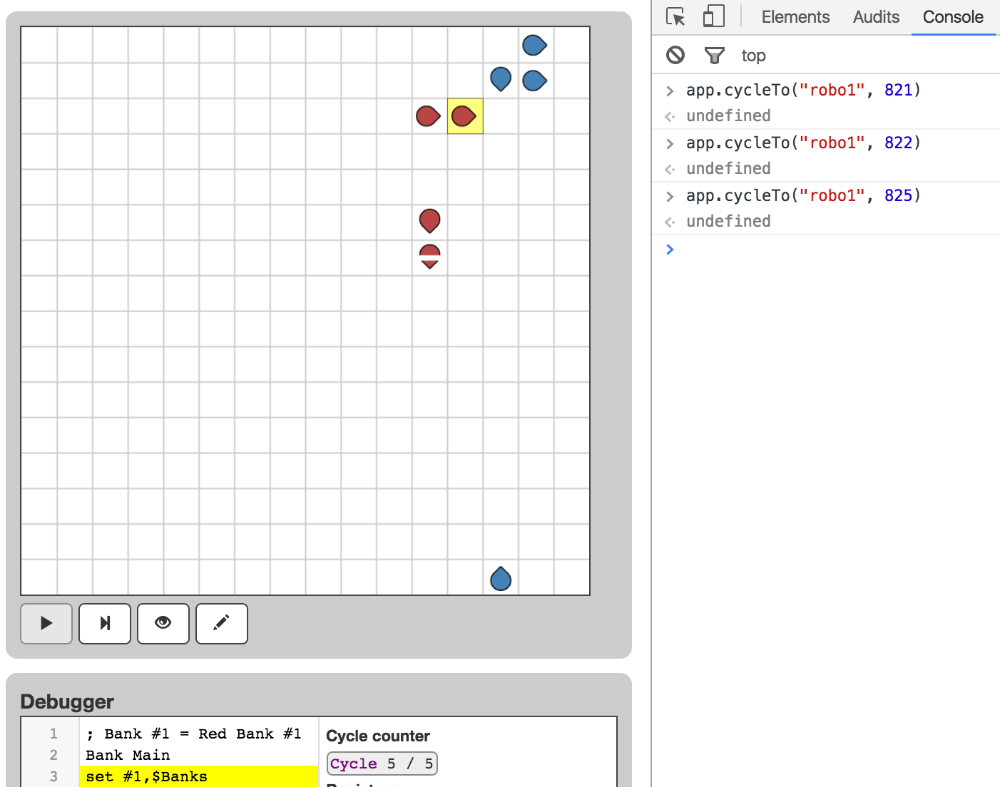
Typically, the create instruction requires at least several hundred cycles.